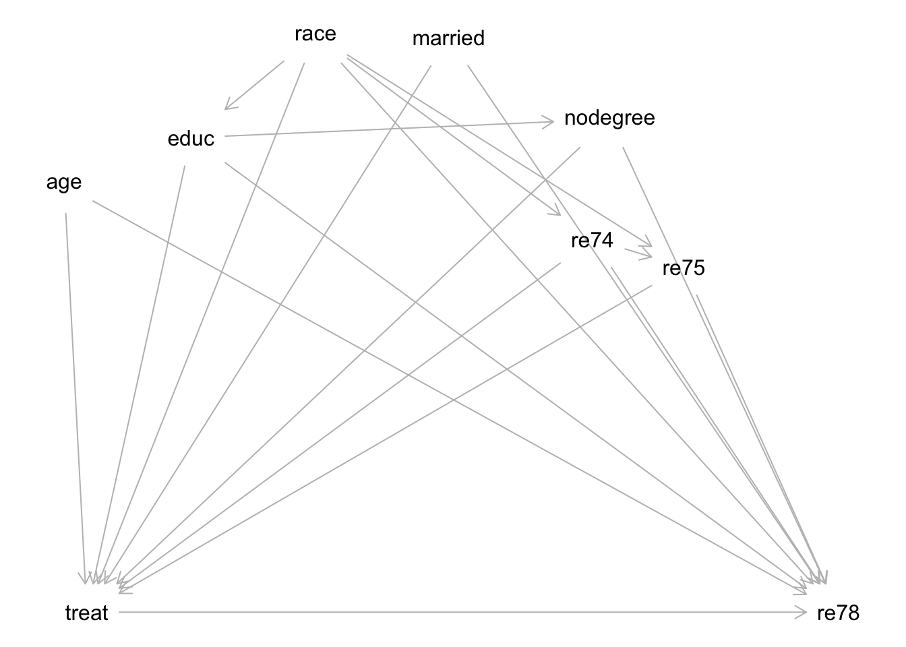

library(tidyverse)
library(broom)
library(cobalt)
library(MatchIt)
library(marginaleffects)
library(dagitty)
# The dataset is called "lalonde" (for one of the original authors)
data(lalonde)6 Matching
Slides for today are available here.
You can download a template file for this activity here.
Data context: job training program
Did a job training program increase incomes?
The National Supported Work Demonstration project [was] a transitional, subsidized work experience program for four target groups of people with longstanding employment problems: ex-offenders, former drug addicts, women who were long-term recipients of welfare benefits, and school dropouts, many with criminal records. The program provided up to 12-18 months of employment to about 10,000 individuals at 15 locations across the country for four years. In ten of these sites – Atlanta, Chicago, Hartford, Jersey City, Newark, New York, Philadelphia, Oakland, San Francisco, and Wisconsin, 6,600 eligible applicants were randomly assigned either to experimental groups (offered a job in supported work) or to control groups, and an evaluation was conducted on the effects of the Supported Work Program. (See here for more details.)
These data were analyzed in LaLonde, 1986 and in Dehejia and Wahba, 1999. We’ll be using the Dehejia and Wahba data to estimate the causal effect of the job training program on income immediately following the program.
Note that although participants were randomly assigned to treatment groups, the data that we’ll be using incorporates data on additional controls from a separate study. The addition of this nonexperimental data creates clear systematic differences between the treatment groups.
Variables of interest:
- Treatment/exposure:
treat(Individual was assigned to the job training program, 1 = yes, 0 = no) - Outcome:
re78(Individual’s income in 1978, in US dollars)
Covariates: all are variables that happen prior to treatment (also called pre-treatment covariates)
age: age in yearseduc: education in number of years of schoolingrace: the individual’s race/ethnicity, (Black, Hispanic, or White)married: an indicator for marital status (1 = married, 0 = not married)nodegree: an indicator for whether the individual has a high school degree (1 = no degree, 0 = degree)re74: income in 1974, in US dollarsre75: income in 1975, in US dollars
Investigation
Causal graph
Consider the following proposed causal graph for this context:
dag <- dagitty('
dag {
bb="0,0,1,1"
age [pos="0.129,0.176"]
educ [pos="0.247,0.140"]
married [pos="0.487,0.064"]
nodegree [pos="0.637,0.126"]
race [pos="0.363,0.062"]
re74 [pos="0.621,0.217"]
re75 [pos="0.706,0.238"]
re78 [outcome,pos="0.850,0.500"]
treat [exposure,pos="0.150,0.500"]
age -> re78
age -> treat
educ -> nodegree
educ -> re78
educ -> treat
married -> re78
married -> treat
nodegree -> re78
nodegree -> treat
race -> educ
race -> re74
race -> re75
race -> re78
race -> treat
re74 -> re75
re74 -> re78
re74 -> treat
re75 -> re78
re75 -> treat
treat -> re78
}
')
plot(dag)
Exercise: Run the code below to test the above causal graph for consistency with the observed data.
- You’ll need to install 2 packages–enter the following in the Console:
install.packages(c("fastDummies", "CCP")) - The longer variable names are shortened to 4-letter abbreviations. (
mrrdis themarriedvariable.) - Based on the results, what updates should we consider to the graph?
# Obtain implied conditional independence statements
# type = "missing.edge" returns a smaller set of statements
# but still tests each missing arrow in the graph
dag_cis <- impliedConditionalIndependencies(dag, type = "missing.edge")
# type = "cis.pillai" is for mixed quantitative and categorical data
dag_test_res <- localTests(dag, data = lalonde, type = "cis.pillai", tests = dag_cis)
# Sort the results by p-value
dag_test_res |>
arrange(p.value)Initial effect estimates
Let’s first look at a naive comparison: an unadjusted difference in outcome across the treatment groups:
# Because treat is encoded numerically as a 0/1 variable, factor(treat) is
# necessary within ggplot() to represent it as a categorical variable
ggplot(lalonde, aes(x = factor(treat), y = re78)) +
geom_boxplot()
lalonde %>%
group_by(treat) %>%
summarize(avg_income = mean(re78))
mod_naive <- lm(re78 ~ treat, data = lalonde)
tidy(mod_naive, conf.int = TRUE)At the other end of the spectrum, let’s examine a multiple linear regression model that adjusts for all of the variables needed to identify the causal effect:
mod_adjusted <- lm(re78 ~ treat + age + educ + race + married + nodegree + re74 + re75, data = lalonde)
tidy(mod_adjusted, conf.int = TRUE)Exercise: In a sentence summarize what you learn from these models. Do you think that matching will produce an estimate closer to the coefficient estimate from mod_naive or from mod_adjusted?
Checking covariate balance before matching
It’s useful to get a sense of covariate balance before matching to understand how much matching improves that balance. Look at the visualizations below to see what variables are most balanced and imbalanced and by how much. (Code is complete for expediency of this activity.)
ggplot(lalonde, aes(x = factor(treat), y = age)) +
geom_boxplot()
ggplot(lalonde, aes(x = factor(treat), y = educ)) +
geom_boxplot()
ggplot(lalonde, aes(x = factor(treat), y = re74)) +
geom_boxplot()
ggplot(lalonde, aes(x = factor(treat), y = re75)) +
geom_boxplot()
ggplot(lalonde, aes(x = factor(treat), fill = race)) +
geom_bar(position = "fill")
ggplot(lalonde, aes(x = factor(treat), fill = factor(married))) +
geom_bar(position = "fill")
ggplot(lalonde, aes(x = factor(treat), fill = factor(nodegree))) +
geom_bar(position = "fill")We can also use numerical balance measures using the bal.tab() function from the cobalt package.
Inputs:
- The first argument is a formula of the form:
TREAMENT_VARIABLE ~ COVARIATE1 + COVARIATE2 + ... stats = c("mean.diffs", "variance.ratios"): indicates that differences in means and ratios of variances between the treatment groups should be computed.int = TRUEindicates that interaction terms are computed and checked for balance in addition to the variables themselves.
Output:
- The
Diff.Uncolumn reports:- Continuous variables: the standardized difference in means (the difference in means divided by a pooled standard deviation across the groups).
- Binary variables: the difference in proportions across the treatment groups
- The order in the difference is Treatment=1 - Treatment=0.
- The
V.Ratio.Uncolumn reports the ratio of variances in the treatment groups (just for continuous variables). The order in the ratio is Treatment=1 / Treatment=0. - The first rows of output are for
bal.tab(
treat ~ age + educ + race + married + nodegree + re74 + re75,
data = lalonde,
stats = c("mean.diffs", "variance.ratios"),
int = TRUE
)We can also look at a visual representation of the above balance statistics with the love.plot() function from the cobalt package.
Inputs:
- Generally the same arguements as for
bal.tab() stars = "raw": Puts an asterisk*next to the binary variables (and binary interaction terms) for which the raw difference in means (proportions) is shown (rather than the standardized difference indicated by the x-axis title)thresholds: Draws vertical lines indicating thresholds under which balance is good. For the differences, 0.1 is a common threshold. For the ratios, 2 (and 0.5) is a common threshold.
love.plot(
treat ~ age + educ + race + married + nodegree + re74 + re75,
data = lalonde,
stats = c("mean.diffs", "variance.ratios"),
int = TRUE,
stars = "raw",
thresholds = c("mean.diffs" = 0.1, "variance.ratios" = 2)
)Exercise: Interpret the balance statistics for 3 rows in the bal.tab() output: age, married, and race_black * married_0. (The interaction term is towards the middle of the table). What is your overall assessment of balance across the treatment groups?
Exact matching
Let’s explore exact matching. With exact matching, units \(i\) and \(j\) have a distance of 0 if all covariates match exactly. Otherwise the distance is infinity.
Exercise: Update the code below to perform exact matching on the lalonde dataset to estimate the average treatment effect on the treated (ATT).
match_out_exact <- matchit(
??? ~ age + educ + race + married + nodegree + re74 + re75,
data = ???,
method = ???,
estimand = ???
)Then we can use bal.tab() and love.plot() to compute and plot balance statistics as well as show sample sizes after matching:
bal.tab(
match_out_exact,
stats = c("mean.diffs", "variance.ratios"),
int = TRUE
)love.plot(
match_out_exact,
stats = c("mean.diffs", "variance.ratios"),
int = TRUE,
stars = "raw",
thresholds = c("mean.diffs" = 0.1, "variance.ratios" = 2)
)When evaluating the quality of a matching procedure, we consider two factors:
- Balance statistics: standardized mean differences of less than 0.1 are considered good for quantitative variables. For binary variables, differences in proportions less than 0.05 are considered good.
- Question: Why are these thresholds irrelevant for exact matching?
- Sample size: Beneath the balance statistics is a sample size table. (Reproduced directly below to avoid scrolling.) The rows are as follows:
- “All”: original sample sizes
- “Matched”: number of units in each group that could be matched
- “Unmatched”: number of units in each group that could not be matched
- “Matched (ESS)”: The standard errors resulting from an unweighted sample of this size will roughly be the same as the weighted sample resulting from matching.
- “Discarded”: The number of cases discarded due to common support restriction. (We’ll explore this in the next lesson.)
Questions:
- What do you notice about the matched sample size relative to the original sample size?
- What do you think would happen to the matched sample sizes when matching on just
age + educ + race + married + nodegree? Run the matching again to check. What are the pros/cons of exact matching on more vs. fewer variables?
Let’s follow up our sample size explorations to understand who was matched. We can extract the matched data using the match.data() function on the result from matchit().
# Extract both the matched data and unmatched data
# drop.unmatched = FALSE gets the unmatched data
match_data_exact <- match.data(match_out_exact, drop.unmatched = FALSE) |>
mutate(matched = !is.na(subclass)) # Indicator of whether a case was matched or notExercise: Inspect the matched data by entering View(match_data_exact) in the Console and by making plots of how a couple of covariates differ between the matched and unmatched units. Summarize what you learn about the characteristics of the units who could be matched and how this impacts the results.
While the matched data from exact matching left far too many units unmatched, let’s see how we would use the matched data to estimate a treatment effect.
In general we would want to fit a model of the outcome Y as a function of treatment, covariates, and treatment-covariate interactions. This is demonstrated by the model below with 5 covariates X1-X5. The * creates the interaction terms, and the fact that X1 + X2 + X3 + X4 + X5 is in parentheses creates interactions between A and each of X1-X5.
# Linear model with covariates and treatment-covariate interactions
mod <- lm(Y ~ A * (X1 + X2 + X3 + X4 + X5), data = our_matched_data, weights = weights)However in this case, the matched data is too small and has cut out too many categories to fit this model. We will fit an unadjusted model to show the process.
- The weights = weights part is supplying weights to the model fit (weighted least squares instead of ordinary least squares).
- There is a
weightscolumn inmatch_data_exactcontaining weights resulting from matching.
mod <- lm(re78 ~ treat, data = match_data_exact, weights = weights)Then we use avg_comparisons() from the marginaleffects package to use information from this model to estimate the ATT. While we can pull up the documentation page with ?avg_comparisons, it is dense to navigate. Here is the essential information for the arguments we use (more information in this MatchIt vignette):
model: The model we fit abovevariables: We want to make comparisons of the outcome across these variables. Here, the treatment variablevcov: Specify an R model formula to estimate cluster-robust standard errors. This is a way of estimating standard errors that takes into account clustering/grouping in the data. Inmatch_data_exactthere is asubclasscolumn that indicates the matched group each unit belongs to.~subclassmeans “estimate cluster-robust standard errors using the subclass variable for the clusters”.newdata: The function uses the data here to predict the values of the outcome for the supplied units under treatment and control. Comparing the average values of these predictions estimates the treatment effect. Here, we filter to just the treated individuals so that the comparison estimates the ATT specifically.- If we performed our matching to estimate the ATE, we would not filter our data.
- If we performed our matching to estimate the ATC (ATU), we would filter to control (untreated) units.
wts: The name of the column containing the weights resulting from matching.
avg_comparisons(
model = mod,
variables = "treat",
vcov = ~subclass,
newdata = filter(match_data_exact, treat == 1),
wts = "weights"
)The single row of output contains the Estimate of the ATT and uncertainty estimates. The columns of output are the same as summary(lm(...)) with the addition of 95% confidence interval endpoints and the S column, which gives the Shannon information transformation of the p-value. It is the answer to the question: How many consecutive “heads” tosses would provide the same amount of evidence (or “surprise”) against the null hypothesis that the coin is fair?
Exercise: Interpret the ATT estimate, and explain what you learn from the 95% confidence interval.
Coarsened exact matching
A downside of exact matching is the difficulty in finding exact matches when there are too many covariates and too few cases. Further, matching exactly on quantitative covariates (like income) is likely quite challenging.
The coarsened exact matching (CEM) method coarsens covariates by making broader categories (e.g., pooling categories, cutting a quantiative variable into categories) and performing exact matching on the coarsened versions of the covariates.
Exercise:
- Use
matchit()to perform CEM to estimate the ATT. - Evaluate the quality of the matching using balance statistics and matched sample sizes.
- Explore the matched data to see who was matched.
- Try to refine to see if the quality of the matching can be improved.
- In the
matchit()function documentation, scroll down to themethodargument, and click the link to the CEM page. - Look at the Examples section at the very bottom to see how you might adjust how CEM coarsens the variables.
- In the
- When you feel satisfied with an updated matching, estimate the ATT on your matched data and interpret the results.
Nearest neighbor matching
Exercise: Implement 2-nearest neighbor matching to estimate the ATT. Use Mahalanobis distance.
You’ll need to look at the matchit() function documentation. On this page look at the documentation for the distance argument and then click the link to the distance function documentation.
match_out_2nn <- matchit(
treat ~ age + educ + race + married + nodegree + re74 + re75,
data = lalonde,
___,
estimand = "ATT"
)Exercise: Evaluate the quality of the matching by inspecting the balance statistics and matched sample sizes.
bal.tab(
match_out_2nn,
stats = c("mean.diffs", "variance.ratios"),
int = TRUE
)love.plot(
match_out_2nn,
stats = c("mean.diffs", "variance.ratios"),
int = TRUE,
stars = "raw",
thresholds = c("mean.diffs" = 0.1, "variance.ratios" = 2)
)Subclassification
Exercise: The following code implements subclassification on the propensity score with 10 subclasses to estimate the ATT. The propensity score is estimated with a generalized linear model (logistic regression). Check the documentation to verify how the choices for the arguments below were chosen.
# Subclassification on the propensity score for the ATT
match_out_subclass <- matchit(
treat ~ age + educ + race + married + nodegree + re74 + re75,
data = lalonde,
method = "subclass",
subclass = 10,
distance = "glm",
estimand = "ATT"
)Exercise: Evaluate the quality of the matching by inspecting the balance statistics. (Looking at matched sample sizes isn’t relevant here because subclassification doesn’t discard units at the matching step.)
# Compute balance statistics overall across all subclasses
bal.tab(
match_out_subclass,
stats = c("mean.diffs", "variance.ratios"),
int = TRUE
)love.plot(
match_out_subclass,
stats = c("mean.diffs", "variance.ratios"),
int = TRUE,
stars = "raw",
thresholds = c("mean.diffs" = 0.1, "variance.ratios" = 2)
)Exercise: Assess common support by comparing the distribution of propensity scores across treatment groups. Does it look like we need to filter out some cases? If so, create a new filtered dataset only keeping cases in the common support region.
# Appends a column called "ps" containing the propensity scores to the original data
lalonde_with_ps <- lalonde %>%
mutate(ps = match_out_subclass$distance)
# Plot
# Use factor(treat) in your plot to encode treatment as a categorical variableTime to estimate the treatment effect!
In general, we start by fitting a model of the outcome Y as a function of treatment, covariates, and treatment-covariate interactions. This is demonstrated by the model below with 5 covariates X1-X5. The * creates the interaction terms, and the fact that X1 + X2 + X3 + X4 + X5 is in parentheses creates interactions between A and each of X1-X5.
# Linear model with covariates and treatment-covariate interactions
mod <- lm(Y ~ A * (X1 + X2 + X3 + X4 + X5), data = our_matched_data, weights = weights)The code below applies the general setting above to our context:
- The weights = weights part is supplying weights to the model fit (weighted least squares instead of ordinary least squares).
- There is a
weightscolumn in our matched data containing weights resulting from matching.
# Extract matched data
match_data_subclass <- match.data(match_out_subclass)
mod <- lm(re78 ~ treat * (age + educ + race + married + nodegree + re74 + re75), data = match_data_subclass, weights = weights)Then we use avg_comparisons() from the marginaleffects package to use information from this model to estimate the ATT. While we can pull up the documentation page with ?avg_comparisons, it is dense to navigate. Here is the essential information for the arguments we use (more information in this MatchIt vignette):
model: The model we fit abovevariables: We want to make comparisons of the outcome across these variables. Here, the treatment variablevcov: “HC3” indicates that we are using heteroskedasticity-robust standard errors which are a valid way to estimate standard errors with weighted least squares- Note that before we used cluster-robust standard errors when using exact matching. Cluster-robust SEs are preferred when there are a lot of clusters (i.e., a lot of subclasses), but with subclassification, there are few (10 for us).
newdata: The function uses the data here to predict the values of the outcome for the supplied units under treatment and control. Comparing the average values of these predictions estimates the treatment effect. Here, we filter to just the treated individuals so that the comparison estimates the ATT specifically.- If we performed our matching to estimate the ATE, we would not filter our data.
- If we performed our matching to estimate the ATC (ATU), we would filter to control (untreated) units.
wts: The name of the column containing the weights resulting from matching.
avg_comparisons(
mod,
variables = "treat",
vcov = "HC3",
newdata = filter(match_data_subclass, treat == 1),
wts = "weights"
)Exercise: Summarize what you learn about the ATT from this output.
Full matching
Exercise: Implement full matching to estimate the ATT using logistic regression to estimate the propensity score. (Review how full matching differs from subclassification.)
match_out_full <- matchit(
___
)Exercise: Evaluate the quality of the matching by inspecting the balance statistics.
# Compute balance statistics overall across all subclasses
bal.tab(
match_out_full,
stats = c("mean.diffs", "variance.ratios"),
int = TRUE
)love.plot(
match_out_full,
stats = c("mean.diffs", "variance.ratios"),
int = TRUE,
stars = "raw",
thresholds = c("mean.diffs" = 0.1, "variance.ratios" = 2)
)Assessing common support: The same common support plot from the subclassification section will apply here. There looks to be good overlap, so no filtering is needed.
Exercise: Estimate the ATT from full matching, and interpret your results.
Moderation analysis
Could the effect of the job training program differ across key subgroups in our data? For example, could the effect be different among those who do and don’t have a degree?
One way to investigate this with matching is to conduct a matching analysis as normal but require exact matching on the nodegree variable. This results in a collection of matched sets where nodegree = 1 (individuals without a degree) and another collection of matched sets where nodegree = 0 (individuals with a degree). The remainder of the analysis is the same, but now we have the option to compare results across subgroups of the nodegree variable.
Exercise: Complete the code below to run full matching as we did above but require an exact match on the nodegree variable. (Look at the matchit() documentation to figure out the missing piece.) Note that we updated the formula in the first argument to include an interaction between nodegree and the other variables because this effectively allows us to estimate different propensity score models across the nodegree subgroups as if we were partitioning our data and running separate matching analyses.
match_out_full_by_nodegree <- matchit(
treat ~ nodegree*(age + educ + race + married + re74 + re75),
data = lalonde,
___ = ___,
method = "full",
distance = "glm",
estimand = "ATT"
)Exercise: Assess common support by comparing the distribution of propensity scores across treatment groups separately in the nodegree subgroups. If there are any common support violations, note them, but don’t filter the data for this investigation.
lalonde_with_ps <- lalonde %>%
mutate(ps = match_out_full_by_nodegree$distance)
# Plot
# Remember to use factor(treat) in your plot to encode treatment as a categorical variable
ggplot(lalonde_with_ps, aes(x = ps, color = factor(treat))) +
geom_density() +
facet_wrap(~nodegree) +
theme_classic()Exercise: Inspect plots of the balance statistics separately across the nodegree subgroups, and evaluate the quality of the matching.
bal_tab_full_by_nodegree <- bal.tab(
match_out_full_by_nodegree,
stats = c("mean.diffs", "variance.ratios"),
int = TRUE,
data = lalonde,
cluster = "nodegree" # Key new part for moderation analysis
)
# We have to create separate plots for the mean differences and the variance ratios because love.plot() can't handle 2 sets of panels
love.plot(
bal_tab_full_by_nodegree,
stats = "mean.diffs",
int = TRUE,
stars = "raw",
thresholds = c("mean.diffs" = 0.1)
)
love.plot(
bal_tab_full_by_nodegree,
stats = "variance.ratios",
int = TRUE,
stars = "raw",
thresholds = c("variance.ratios" = 2)
)Exercise: Estimate the ATT across nodegree subgroups, and interpret your findings.
match_data_full_by_nodegree <- match_data(match_out_full_by_nodegree)
mod <- lm(re78 ~ treat * (age + educ + race + married + nodegree + re74 + re75), data = match_data_full_by_nodegree, weights = weights) # Same as before
avg_comparisons(
mod,
variables = "treat",
vcov = ~subclass, # Use ~subclass instead of "HC3" because there are a lot of subclasses
newdata = filter(match_data_full_by_nodegree, treat == 1),
wts = "weights",
by = "nodegree" # Key new part for moderation analysis
)Synthesis
Check your understanding of core ideas by answering the following:
- What exactly is matching and how does it work?
- Describe the steps of a causal analysis that uses matching.
- What are the differences between the ATE, ATT, and ATC/ATU estimands? When would we use one versus the others?
- When does matching work well, and when does it not?